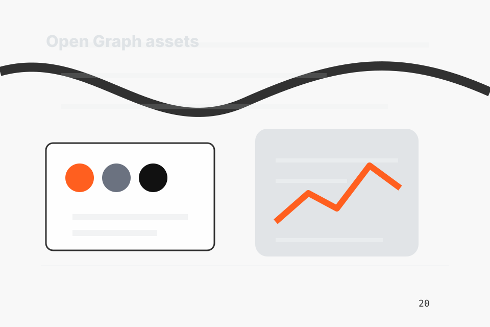
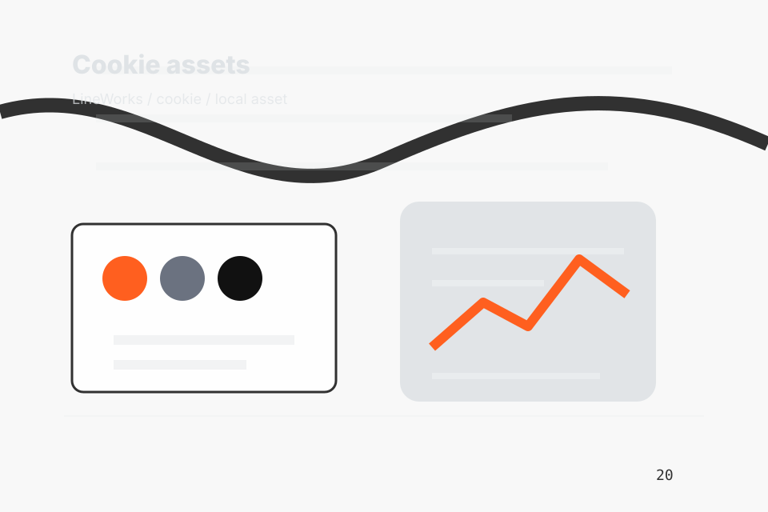
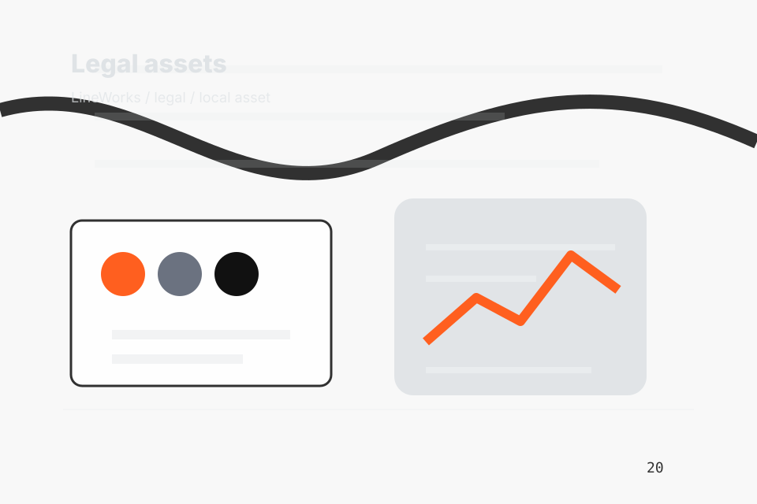

01
01Brand assets
assets/brand / Formlabs direction / local to this site.
Local static asset system
Asset-System section 1 gives researching visitors a practical route into guides, checklists, and comparison material without leaving the site structure.
Asset categories
01assets/brand / Formlabs direction / local to this site.
assets/brand / Formlabs direction / local to this site.
assets/brand / Formlabs direction / local to this site.
 04
04assets/images/hero / Formlabs direction / local to this site.
assets/video/posters / Formlabs direction / local to this site.
assets/icons/ui / Formlabs direction / local to this site.
assets/illustrations/diagrams / Formlabs direction / local to this site.
assets/typography / Formlabs direction / local to this site.
assets/css / Formlabs direction / local to this site.
assets/js / Formlabs direction / local to this site.
assets/animations / Formlabs direction / local to this site.
assets/seo / Formlabs direction / local to this site.

13assets/og / Formlabs direction / local to this site.
assets/social / Formlabs direction / local to this site.
assets/header / Formlabs direction / local to this site.
assets/footer / Formlabs direction / local to this site.
assets/forms / Formlabs direction / local to this site.
assets/analytics / Formlabs direction / local to this site.

19assets/cookies / Formlabs direction / local to this site.
assets/accessibility / Formlabs direction / local to this site.
assets/i18n / Formlabs direction / local to this site.
assets/blog / Formlabs direction / local to this site.
assets/services / Formlabs direction / local to this site.
assets/industry / Formlabs direction / local to this site.
assets/case-studies / Formlabs direction / local to this site.
assets/downloadables / Formlabs direction / local to this site.

27assets/legal / Formlabs direction / local to this site.
assets/trust / Formlabs direction / local to this site.
Site routes
Documentation
{kind=link}
{kind=link}
{kind=link}
{kind=link}
{kind=link}
{kind=link}
{kind=link}
{kind=link}
{kind=link}
{kind=link}
{kind=link}
{kind=link}
{kind=link}
{kind=link}
{kind=link}
{kind=link}
{kind=link}
{kind=link}
{kind=link}
{kind=link}